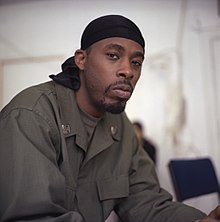

Gary Grice, also known as GZA, is another one of the founding members of Wu-Tang Clan. “The Genius,” as he is referred to by many, is the oldest member of the group and one of the most talented rappers to emerge from the collective. As the “spiritual head” of Wu-Tang, he developed a distinct and intelligent style of weaving metaphors and philosophies into his rhymes.
GZA, in a study conducted by Rolling Stone, was determined to have the second most expansive vocabulary out of any rapper in the hip-hop scene. Due to his creative flow, GZA’s solo career boomed as well, with albums topping Hip Hop/R&B and Billboard charts.